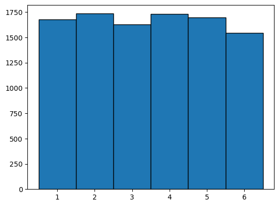
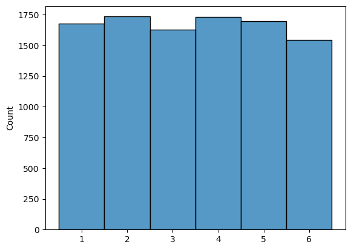
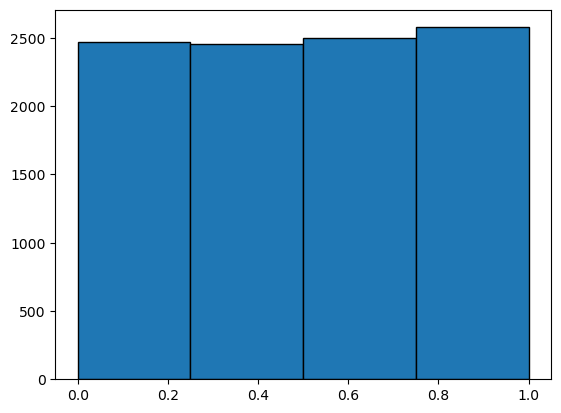
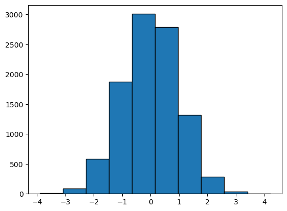

Lecture Week 2 Fri 10/11#
Visualizing random variables#
import numpy as np
x = np.random.randint(1, 7,10000)
import matplotlib.pyplot as plt
plt.hist(x,bins=6, range=(0.5,6.5), edgecolor='black')
(array([1674., 1734., 1625., 1729., 1695., 1543.]),
array([0.5, 1.5, 2.5, 3.5, 4.5, 5.5, 6.5]),
<BarContainer object of 6 artists>)

import seaborn
seaborn.histplot(x, discrete=True)
<Axes: ylabel='Count'>

x = np.random.uniform(0,1,10000)
plt.hist(x, bins=4,range=(0,1),edgecolor='black')
(array([2471., 2453., 2498., 2578.]),
array([0. , 0.25, 0.5 , 0.75, 1. ]),
<BarContainer object of 4 artists>)

x = np.random.randn(10000)
plt.hist(x, edgecolor='black')
(array([1.000e+01, 9.200e+01, 5.810e+02, 1.874e+03, 3.010e+03, 2.794e+03,
1.316e+03, 2.860e+02, 3.400e+01, 3.000e+00]),
array([-3.90184365, -3.08955506, -2.27726646, -1.46497786, -0.65268927,
0.15959933, 0.97188793, 1.78417652, 2.59646512, 3.40875371,
4.22104231]),
<BarContainer object of 10 artists>)

Estimating probability#
Estimate probability by relative frequency
Run random experiment N times
P(event A happens) = number of times A happens / total number of trials
# if X is standard normal,
# i.e. X is drawn from np.random.randn
# What is the probability that X>2
# take small sample size for example
N = 10
x = np.random.randn(N)
print(x)
[-1.91741214 -1.55955806 -0.39938613 -0.15342849 -1.47172459 0.34478221
0.99400821 -1.6822069 -0.27688327 -0.30929252]
# this get array of True/False
# Usually, when doing arithmetic operation on boolean array, True is 1, False is 0
x>2
array([False, False, False, False, False, False, False, False, False,
False])
# count how many True in the array
np.sum(x>2)
0
# relative frequency
np.sum(x>2)/N
0.0
# using for loop
N = 10000
x = np.random.randn(N)
count = 0
for i in range(len(x)):
if x[i]>2:
count = count + 1
print(count/N)
0.0224
# Throw 2 dice,
# what is the probability that the sum is >= 7
N = 1000000
d1 = np.random.randint(1, 7,N)
d2 = np.random.randint(1, 7,N)
# print(d1)
# print(d2)
dsum = d1 + d2
# print(dsum)
np.sum(dsum>=7)/N
0.583966
np.mean(d1)
3.499787
np.mean(d1+d2)
7.002721